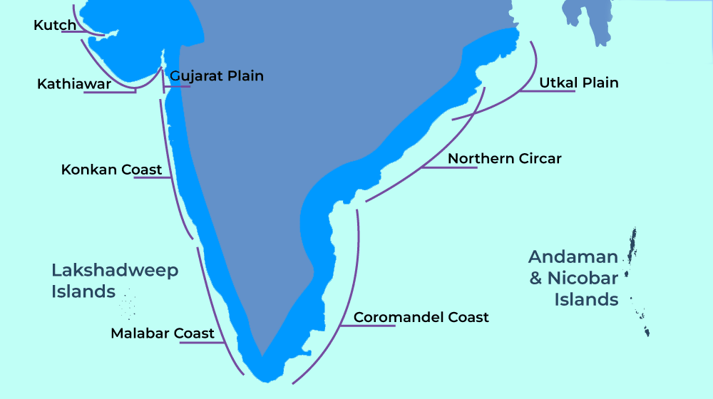
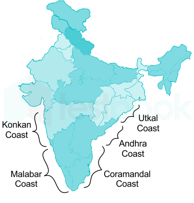
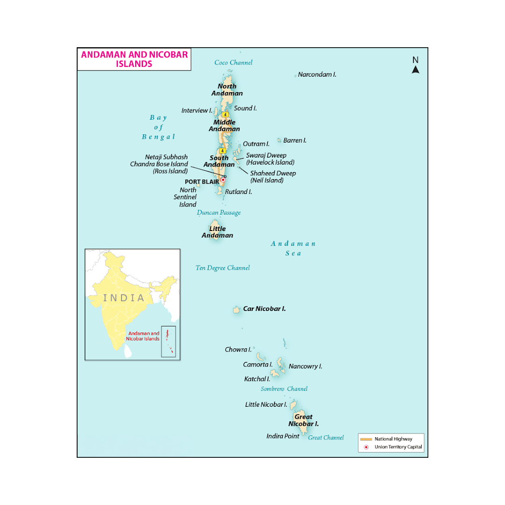
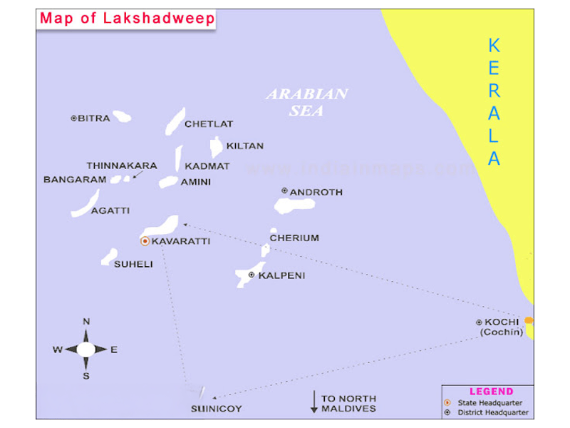

Physiographic Divisions Of India — Coastal Plains And Islands
The Coastal Plains of India
The Coastal Plains of India form a critical zone between the Peninsular Plateau and the coastline of India. These plains stretch along the edges of the Arabian Sea in the west and the Bay of Bengal in the east, serving as an important ecological, economic, and cultural interface between land and sea.

Key Features of Coastal Plains:
Total Length: The Coastal Plains of India stretch for about 6,000 km, extending along both the western and eastern coasts of India. Geographical Position: These plains are located between the Peninsular Plateau (which forms the hinterland) and the coastline of India. Physiographic Division: The Coastal Plains are one of the five main physiographic divisions of India. Ecological Significance: Coastal plains are home to important ecosystems, including mangroves, estuaries, and salt marshes, and are critical for biodiversity. Economic Importance:
These areas are rich in natural resources, ports, and agriculture, and are central to India’s trade and commerce.
Divisions of the Coastal Plains:
The Coastal Plains of India are divided into two major parts:
1. Western Coastal Plains 2. Eastern Coastal Plains
These two coastal sections meet at Kanyakumari, the southernmost tip of India.
Western Coastal Plains:
Location : Between the Western Ghats and the Arabian Sea coast.
Spread: From the Rann of Kutch in Gujarat in the north to Kanyakumari in the south. States Covered: Gujarat, Maharashtra, Goa, Karnataka, Kerala. Width: Narrower in the middle (about 65 km) but broader in the north and south. Coastline Type:
Submergent coastline, resulting from eustatic sea-level rise (submergence of land), facilitating the development of natural harbours and ports.
The Western Coastal Plains can be further divided based on relief and topography.
Kutch Peninsula (Northwestern Gujarat):
Location : Extends over northwestern Gujarat .
Formation: Originally an island, the Kutch Peninsula became part of the mainland due to sediment deposition by the Indus River. Topography: Arid and semi-arid, with features like coastal sand dunes, sandy plains, and rocky hills. Significance: Known for the Great Rann of Kutch, a salt-soaked plain and seasonal wetland. Rann of Kutch: A large salt marsh in the north, surrounded by salt flats and receiving little rainfall.
Konkan Coast:

Location : From Mumbai (Maharashtra) to Goa .
Topography: Characterized by a narrow, rocky coastline interspersed with coconut groves and small beaches. Rivers: The region is drained by rivers like the Mandovi and Zuari. Climate: Tropical, with high rainfall and humidity. Economic Importance: Rich in fisheries and has major ports like Mumbai and Goa.
Karnataka Coast:
Location : From Goa to Kerala .
Features: Known for long beaches like Udupi, Mangalore, and Karwar. Rivers: Major rivers include the Netravati, Sharavati, and Tungabhadra. Topography: Coastal plains here are narrow and feature rocky promontories, salt pans, and backwaters.
Kerala Coast:
Location : The southernmost part of the western coast .
Features: Known for backwaters, lagoons, and beaches like Kochi and Varkala. Economic Importance: Major agricultural activities such as coconut farming and spices. The region also has key ports like Cochin Port. Rivers: Periyar, Pamba, and Bharathappuzha drain the region.
Eastern Coastal Plains:
Location: Located between the Eastern Ghats and the Bay of Bengal coast. Spread: From the West Bengal coastline in the north to Tamil Nadu and Andhra Pradesh in the south. States Covered: West Bengal, Odisha, Andhra Pradesh, Tamil Nadu. Width: Generally wider than the western counterpart, with extensive delta regions. Coastline Type: Emergent coastline, indicating the land is rising above sea level.
The Bengal Coast (West Bengal and Odisha):
Location : Between Kolkata (West Bengal) and Chandbali (Odisha).
Features: Characterized by the Sundarbans mangrove forest, the largest of its kind in the world. Rivers: Drained by the Hooghly and Mahanadi rivers. Economic Importance: Rich in marine life, agriculture, and ports like Kolkata. Delta: The Sundarbans Delta is an ecologically rich area, known for its tiger reserve and mangrove ecosystems.
Andhra Pradesh and Tamil Nadu Coast:
Location : From Kakinada (Andhra Pradesh) to Chennai (Tamil Nadu).
Features: Known for long beaches, estuaries, and backwaters. Rivers: Major rivers like the Godavari, Krishna, and Cauvery drain this region. Economic Significance: Major ports like Chennai Port and Visakhapatnam are located here, supporting India's shipping industry. Fisheries: The region is also a major producer of seafood. Climate: Tropical with seasonal monsoons.
The Coromandel Coast:
Location : In Tamil Nadu , between Chennai and Cuddalore .
Features: Known for estuaries, salt marshes, and delta regions. Rivers: The Cauvery River forms a major delta here. Economic Significance: The Cauvery Delta is agriculturally rich and supports irrigated agriculture.
Comparison Between Eastern and Western Coastal Plains
| Feature | Western Coastal Plains | Eastern Coastal Plains |
|---|---|---|
| Width | Narrower | Wider |
| Geographical Location | Lies between the Western Ghats and the Arabian Sea | Lies between the Eastern Ghats and the Bay of Bengal |
| Topography | Intersected by various mountains of the Western Ghats | Runs continuously from north to south |
| Rivers | Rivers form estuaries (e.g., Narmada, Tapi, Mahi, Godavari, Krishna) | Rivers form wide deltas (e.g., Mahanadi, Godavari, Krishna, Cauvery) |
| Harbors | Favours the formation of harbours (e.g., Mumbai, Mangalore, Kochi) | Do not favour the formation of harbours due to wide continental shelves (e.g., Kolkata Port is an exception) |
| Monsoon Rains | Receives a high amount of rain from southwest monsoons | Receives rains from both northeast and southwest monsoons |
| Rainfall | High rainfall, especially along the Konkan coast and Kerala | Moderate rainfall along the Coromandel Coast and Northern Andhra Pradesh |
| Coastal Features | Rocky coast with backwaters on the Malabar Coast and estuaries on the Konkan Coast | Mostly sandy with sand dunes, lagoons, and deltaic plains |
|---|---|---|
| Fishing Industry | Rich in marine fsiheries, supports commercial fsihing | Rich in marine fsiheries, with large estuaries ideal for fsihing |
| Agriculture | Mostly monsoon-dependent agriculture (e.g., coconut, rubber, spices) | Agriculture is irrigated, focused on crops like rice, sugarcane, and cotton |
| Climate | Tropical climate with high humidity, moderate to heavy rainfall | Tropical to subtropical climate with moderate humidity, rainfall varies |
| Coastal Ecosystems | Rich in mangrove forests, estuaries, and backwaters | Rich in deltaic ecosystems, salt marshes, and mangrove forests |
| Major Ports | Mumbai, Kochi, Mangalore, Goa, Kandla, Surat | Kolkata, Chennai, Visakhapatnam, Paradip, Cochin |
Significance of the Coastal Plains:
Economic Significance: Ports: The coastal plains house several major ports like Mumbai, Chennai, Kochi, and Visakhapatnam, facilitating international trade. Agriculture: Fertile plains, especially the delta regions, support rice, sugarcane, and fisheries. Tourism: The coastal areas are popular for beaches, heritage sites, and wildlife sanctuaries.
Ecological Significance: The plains are home to rich ecosystems, including mangroves, salt marshes, and estuaries, which provide breeding grounds for marine life and protect the coastline from erosion. Biodiversity: The Sundarbans, Coromandel Coast, and backwaters of Kerala are rich in biodiversity and host many rare species of flora and fauna.
Climate Control: The coastal plains influence monsoon patterns and temperature regulation. Coastal areas tend to have a moderate climate, with sea breezes lowering the impact of extreme heat in summer.
The Islands of India
The Indian Islands refer to the group of islands scattered across the Indian Ocean, the Arabian Sea, and the Bay of Bengal. These islands form part of India's geographical territory and are an important component of its physiographic divisions.
There are two main groups of islands:
The Andaman and Nicobar Islands The Lakshadweep Islands
Andaman and Nicobar Islands
The Andaman and Nicobar Islands form a significant part of India's geographical landscape, located in the Bay of Bengal. These islands are known for their ecological importance, strategic location, and rich biodiversity. Below is a comprehensive breakdown of the Andaman and Nicobar Islands, covering their geography, sub-groups, important islands, tribes, resources, and more.
Location : The islands are located in the Bay of Bengal , to the southeast of the Indian
subcontinent, between 6° 45 ′ N to 13° 41 ′ N latitude and 92° 12 ′ E to 93° 57 ′ E longitude. Geographical Extent: The Andaman and Nicobar Islands stretch over approximately 590 km in length. The maximum width of the archipelago is about 58 km. Administrative Division: The islands are part of the Union Territory of Andaman and Nicobar Islands, with Port Blair as the capital. Political Significance: The islands hold strategic military importance, as they are located near the Malacca Strait, a critical international shipping route.
| Channel | Division |
|---|---|
| 10-Degree Channel | The Andaman Islands and Nicobar Islands |
| Duncan Passage | Great Andaman and Little Andaman |
| St. George Channel | Little Nicobar and Great Nicobar |
| Grand Channel | Great Nicobar and Sumatra Islands (Indonesia) |
Major Groups of Islands
The Andaman and Nicobar Islands are divided into two main groups:
The Andaman Islands

The Nicobar Islands
Each group has distinct characteristics, geography, and features.
The Andaman Islands
Location: Located to the north of the Nicobar Islands, these islands are the first part of the archipelago encountered from the mainland of India. Area: The Andaman Islands cover approximately 2,400 sq km. Division: The Andaman Islands are divided into three major sub-groups: North Andaman Middle Andaman South Andaman Key Islands: Great Andaman: The largest island, located in the northern part of the group. Little Andaman: Located in the south, separated from Great Andaman by the Duncan Passage (50 km wide). Havelock Island: A popular tourist destination known for its pristine beaches and water sports. Neil Island: Known for its natural beauty and coral reefs. Geographical Features: The Andaman Islands are characterized by tropical rainforests, mangrove swamps, and coral reefs. Volcanic activity: The Barren Island, located in the northernmost part of the Andaman group, is an active volcano.
Climate: The region experiences a tropical climate with high humidity throughout the year. The average annual rainfall is about 3,000 mm. Capital: Port Blair, located in South Andaman, is the administrative capital of the Union Territory. Tribes: The Andaman Islands are home to several Indigenous tribes: Jarwas and Sentinalese (isolated and hostile tribes) Onge and Great Andamanese (semi-isolated tribes) Biodiversity: The islands are rich in wildlife and vegetation, with a variety of endemic species, including:
Andaman wood pigeon Andaman wild boar Mugger crocodile Coral reefs around Havelock and other islands Tourism: The Andaman Islands are a popular tourist destination, with attractions like: Radhanagar Beach (Havelock) Cellular Jail (Port Blair) Chidiya Tapu (bird sanctuary)
The Nicobar Islands
Location:
Located south of the Andaman Islands, the Nicobar Islands are the southernmost group of islands in the Indian archipelago. Area: The Nicobar Islands cover an area of about 1,653 sq km. Division: The Nicobar Islands are divided into three major sub-groups: Northern Group: Includes Car Nicobar and Battimalv. Central Group:
Includes Chowra, Chaura, Teressa, Katchal, Camorta, Nancowry, Trinket, and Tillangchong. Southern Group: Includes Great Nicobar, Little Nicobar, Kondul Island, Pulo Milo (Milo Island), Meroe, Treis, and others.
Key Islands: Great Nicobar: The largest and southernmost island in the Nicobar group. It is located about 147 km from Sumatra (Indonesia). Car Nicobar: Known for the Car Nicobar Airfield, a strategic military base. Katchal and Camorta: Noted for their scenic beauty and small populations. Geographical Features: The Nicobar Islands are mostly flat with some rolling hills and have dense tropical forests. The islands are located near the Sunda Shelf, where the ocean depth rapidly increases.
Climate: The Nicobar Islands experience a tropical climate with seasonal rainfall, mostly from the southwest monsoon.
The average annual rainfall is about 3,000 mm. Tribes: The Nicobar Islands have Indigenous tribes such as: Shompens (semi-nomadic tribe) Nicobarese (mainly settled and semi-modernized) Biodiversity: The Nicobar Islands are home to unique flora and fauna, including: Nicobar pigeon (the state bird) Varieties of marine life, including dolphins, sea turtles, and dugongs. Strategic Importance: Due to their location, the Nicobar Islands have strategic importance for India's defence and connectivity with Southeast Asia.
Major Rivers and Water Bodies
Rivers: While there are no significant rivers flowing through the islands, several streams and small rivers flow into the sea, providing fresh water sources.
The Dhanikhari River (South Andaman) is one of the longest rivers. Water Bodies: Lakes: Several lakes, such as Saddle Peak Lake (North Andaman), add to the beauty and ecological significance of the islands. Oceans and Seas: The Andaman Sea surrounds the islands to the west, while the Bay of Bengal lies to the east.
Environmental Issues
Deforestation: Increased human settlement and tourism have led to deforestation in certain areas. Conservation Efforts: The Andaman and Nicobar Islands are home to several protected areas, such as the Rani Jhansi Marine National Park and South Reef Sanctuary. These efforts are aimed at preserving the endangered species and unique ecosystems of the islands.
Lakshadweep Islands
The Lakshadweep archipelago is composed entirely of coral deposits. All the islands are atolls surrounded by fringing reefs. These islands are located in the Reunion Hotspot volcanic region. The northernmost islands are the Amindivi Islands, while the southernmost is Minicoy Island. The 8°N latitude separates Minicoy Island from the Maldives, while the 9°N latitude divides Minicoy from the rest of the Lakshadweep group. Minicoy Island, located south of the 9-degree channel, is the largest island in the archipelago.
Location : The Lakshadweep Islands are located in the Arabian Sea , about 200 to 400
km off the Kerala coast in southwestern India. They are situated between 8° and 12° N latitude and 71° to 74° E longitude. Number of Islands: The Lakshadweep Islands consist of 36 islands, spread over an area of about 30,000 square miles. Out of the 36 islands, only 10 are inhabited. Area: The total land area of Lakshadweep is about 32.6 square km, making it India’s smallest Union Territory. Capital: The capital of Lakshadweep is Kavaratti, which is also one of the largest and most developed islands in the archipelago. Administrative Division:
Lakshadweep is a Union Territory of India, and the Administrator of Lakshadweep is appointed by the President of India.

Geographic Features
Atolls and Coral Reefs :
Lakshadweep is famous for its coral atolls, which are ring-shaped coral reefs that encircle lagoons. The islands are coral islands, formed by the deposition of corals and marine organisms. The most famous atoll in Lakshadweep is the Agatti Atoll. Topography: The islands have flat terrain, and most of them are low-lying. The average elevation of the islands is just 1-2 meters above sea level. These islands are formed by coral deposits, making the soil sandy and infertile. Many of the islands are surrounded by beautiful lagoons, which add to the ecological richness of the region.
Rivers and Lakes: Lakshadweep does not have any significant rivers due to its low elevation and terrain. The freshwater supply primarily comes from rainwater harvesting and underground water reserves.
Major Islands of Lakshadweep
The islands in Lakshadweep are spread across the Arabian Sea, and they are divided into three sub-groups:
Northern Group: Amini, Andrott, Kiltan, and Chetlat are some of the islands in this group. Andrott Island is the largest island in the northern group and is home to the only mosque in Lakshadweep, the Jamia Masjid.
Central Group: Kavaratti Island: The capital of Lakshadweep and one of the most developed islands. Kalapeni Island: Known for its clear waters and coral reefs, which attract tourists. Pitti Island: A small, uninhabited island known for its bird sanctuary. Southern Group: Minicoy Island: The largest island in the southern group, famous for its distinct Maldivian culture. Fisheries: Minicoy Island is known for its fishing industry and is home to the Laccadive people. The island's lighthouse, located at the southern tip, is a famous landmark.
Climate
Tropical Climate : The climate in Lakshadweep is tropical, with warm temperatures
throughout the year. Temperature: Average temperature ranges between 25°C to 32°C year-round. Monsoon: The southwest monsoon (June to September) brings heavy rainfall to the islands. The annual rainfall is around 1,200 mm to 1,500 mm. Humidity: The islands experience high humidity levels, which are typical of tropical regions.
Biodiversity and Ecology
Flora :
Lakshadweep has limited vegetation due to its arid soil. However, the islands are home to coconut palms, breadfruit trees, and mango trees. Coral reefs are an important ecological feature, supporting a variety of marine life, including sea turtles, fish species, and crustaceans.
Fauna: The coral reefs surrounding the islands are home to a wide variety of marine species, including marine turtles, dolphins, whale sharks, and various species of fish. Birdlife: The islands have a variety of seabirds, and Pitti Island is known for being a bird sanctuary.
Economic Activities
Fishing : The primary occupation of the people of Lakshadweep is fishing , which is the
main economic activity. Coconut Cultivation: Coconut palms are extensively cultivated and are used in various forms, including coconut oil, copra (dried coconut), and as food. Tourism: Tourism is a growing industry, especially eco-tourism and beach tourism. The islands, with their pristine beaches, coral reefs, and clear waters, attract domestic and international tourists. Water sports such as scuba diving, snorkelling, and swimming are popular activities for visitors. Agatti Island and Kavaratti Island are the most frequently visited islands by tourists.
Agriculture: Aside from coconuts, a few islands also cultivate crops such as tobacco, vegetables, and fruits for local consumption.
Tribes and Culture
Inhabitants : The population of Lakshadweep is primarily of Indo-Aryan descent, with
a mix of Arabian and Maldivian influences. Languages: The primary language spoken is Mahl, which is a variety of Dhivehi (the language of the Maldives). Other languages spoken include Malayalam and English. Religion: The majority of the population is Muslim, with Islam being the predominant religion across the islands. Culture: The culture of Lakshadweep is influenced by both Indian and Maldivian traditions. The people are known for their traditional boat-building, fishing, and dancing.
Environmental Issues
Coral Bleaching : The coral reefs are under threat from global warming , leading to
coral bleaching and loss of biodiversity. Climate Change: Rising sea levels and extreme weather patterns, such as storms and cyclones, pose a threat to the low-lying islands. Overfishing: Over-exploitation of marine resources is affecting the fish populations and overall ecological balance.
Other Islands of India
Island Name Location State/Union Significance Territory
| New Moore Island (South Talpatti) | Bay of Bengal, Ganges-Brahma putra Delta | West Bengal/Bangladesh | A small uninhabited island emerging post-cyclone in 1970, claimed by India and Bangladesh due to potential oil and gas reserves. |
|---|---|---|---|
| Diu Island | Gulf of Cambay, Kathiawar Coast | Gujarat | Famous for the Diu Fort, beaches like Nagoa and Ghoghla, and historical Portuguese inful ence. |
| Majuli Island | Brahmaputra River, Assam | Assam | World's largest river island, a cultural and spiritual hub for Assamese neo-Vaishnavites. |
| Abdul Kalam Island (Wheeler Island) | Off the Odisha Coast | Odisha | India's missile testing site, crucial for defence research and technology was formerly known as Wheeler Island. |
| Sagar Island | Ganga Delta, Bay of Bengal | West Bengal | A prominent Hindu pilgrimage site, home to the annual Sagar Mela during Makar Sankranti. |
| Halliday Island | Sundarbans, Malta River | West Bengal | A wildlife refuge in the Sundarbans, known for its rich biodiversity and environmental signifciance. |
| Phumdis (Floating Islands) | Keibul Lamjao National Park, Manipur | Manipur | Floating islands in Loktak Lake, are home to the endangered Sangai deer and unique ecosystems. |
| Munroe Island | Conful ence of Ashtamudi and Vembanadu Lakes | Kerala | An inland island at the conful ence of two lakes, known for its natural beauty and cultural signifciance. |
|---|---|---|---|
| Kochi Islands | Arabian Sea | Kerala | A group of islands near Kochi, notable for its strategic port, history, and the famous Kochi shipyard. |
| Rameswaram Island | Gulf of Mannar | Tamil Nadu | Important pilgrimage site, associated with Lord Rama, and an integral part of the Palk strait between India and Sri Lanka. |
| Netrani Island | Arabian Sea | Karnataka | A small island near Murudeshwar, popular for its coral reefs and underwater diving. |
| Maharajpur Island | Krishna River, Andhra Pradesh | Andhra Pradesh | Known for its picturesque landscapes and as a part of the river islands in Andhra Pradesh. |
| Barren Island | Andaman Sea | Andaman and Nicobar Islands | The only active volcano in India, located in the Andaman group of islands is important for geological research. |
| Viper Island | Andaman Sea | Andaman and Nicobar Islands | Known for its historical signifciance, the site of a British colonial prison and its association with the freedom struggle. |
Long Island Andaman Sea Andaman and Famous for its natural beauty, Nicobar Islands and beaches and is a popular tourist destination in the Andaman archipelago.